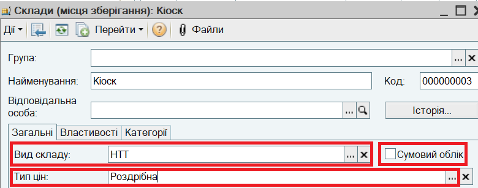
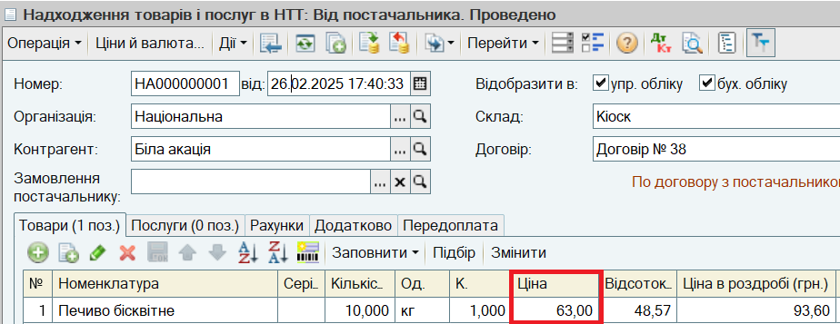
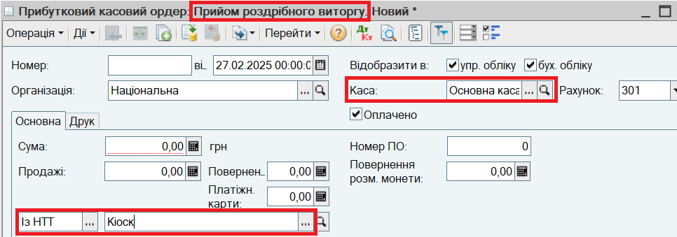
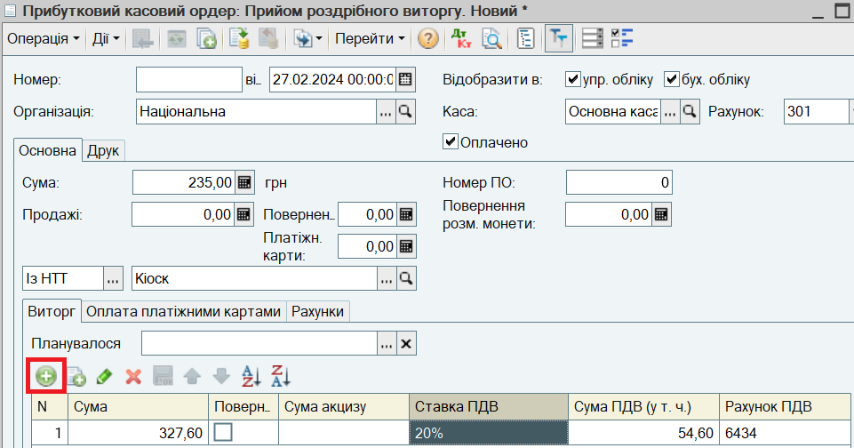
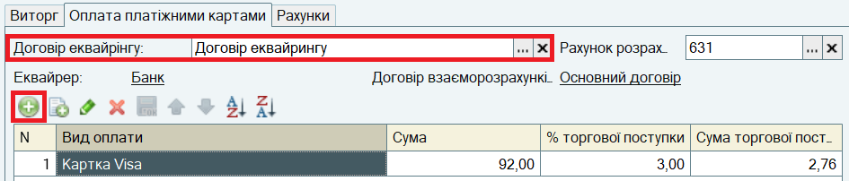
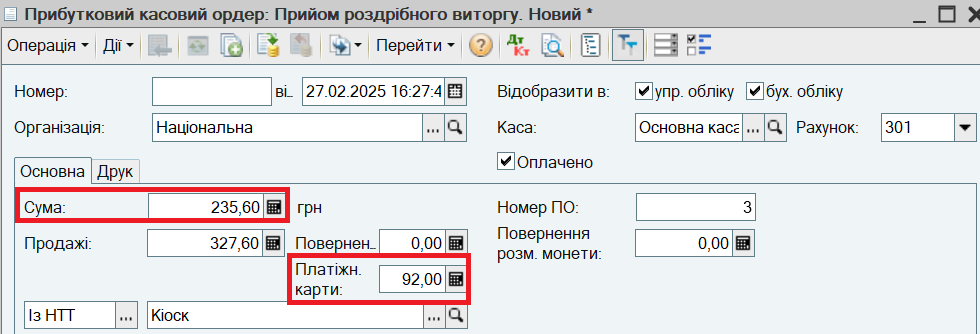
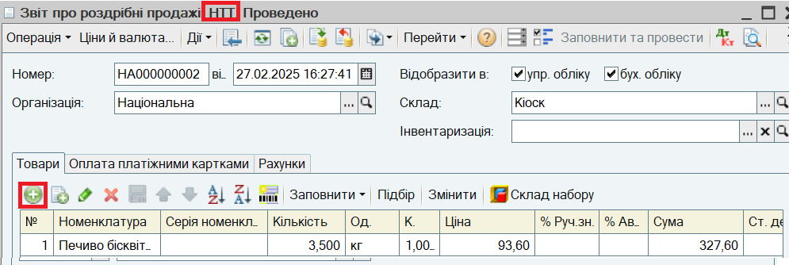

У цьому розділі описано продаж товарів в НТТ, в якій ведеться кількісний облік товарів.
Продаж товарів в СНТТ, в якій облік товарів не ведеться, відображається аналогічно. Різниця полягає в тому, що для СНТТ не вводиться Звіт про роздрібні продажі.
1. Введіть в довідник Склади (місця зберігання) неавтоматизовану торгівельну точку.

2. Оформіть надходження товарів в НТТ. Для цього відкрийте пункт меню Документи - Роздріб - Надходження товарів і послуг в НТТ. Введіть новий документ.

Зазначається Ціна постачальника. Автоматично визначається Ціна в роздробі - це значення ціни типу, зазначеного в картці НТТ.
Проведіть документ.
ПРИМІТКА.
Надходження товарів в НТТ з розподільного складу відображається документом Переміщення товарів.
3. Оформіть приймання виторгу з НТТ. Для цього відкрийте пункт меню Документи - Грошові кошти - Каса - Прибутковий касовий ордер. Введіть новий документ. В документі встановіть вид операції Прийом роздрібного виторгу. Заповніть інформацію про Касу та НТТ.:

4. На закладці Виторг внесіть інформацію про суми продажів і повернень у розрізі податкових ставок відповідно до Z-звіту:

5. На закладці Оплата платіжними картками заповніть інформацію про Договір еквайрингу та суму оплат платіжними картками:

6. Перевірте Суму ПКО, яку розраховано автоматично:

7. На закладці Рахунки зазначте Статтю доходів. Проведіть документ.
8. Зареєструйте звіт про продажі, що надійшов від НТТ. Для цього відкрийте пункт меню Документи - Роздріб - Звіти про роздрібні продажі. Введіть новий документ Звіт про роздрібні продажі з видом операції НТТ:

ПРИМІТКА.
Якщо у звіті про роздрібні продажі є інформація про надані знижки (наприклад знижки по дисконтним картках), то в документі Звіт про роздрібні продажі вручну вводиться відсоток наданої знижки (% Авт. зн.) і причина надання знижки (Умова автоматичної знижки).
9. На закладці Оплата платіжними картками заповніть інформацію про Договір еквайрингу та суму оплат платіжними картками так само, як в документі Прибутковий касовий ордер. Проведіть документ.
ВАЖЛИВО.
Звіт про роздрібні продажі може бути складений на підставі інвентаризації в НТТ. У цьому випадку спочатку оформляється документ Інвентаризація товарів, в якому зазначаються залишки товарів в НТТ. На підставі Інвентаризації товарів вводиться документ Звіт про роздрібні продажі, в якому кількість проданих товарів визначається як відхилення від облікової кількості.
ПОРАДА.
Якщо НТТ передає звіт про продажі одночасно з виторгом, можна спочатку ввести документ Звіт про роздрібні продажі, а потім на його підставі ввести документ Прибутковий касовий ордер.
Наступний розділ: "Аналіз показників діяльності підприємства"